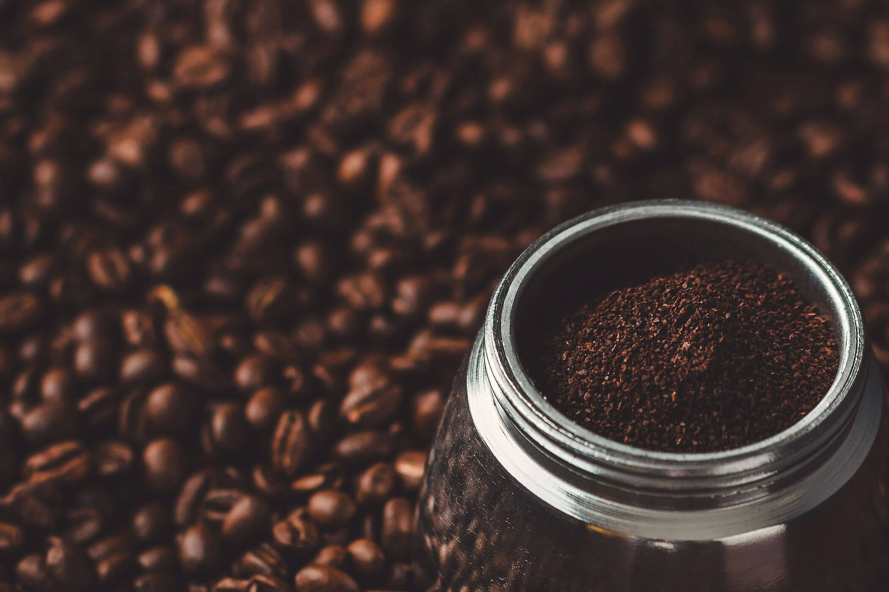
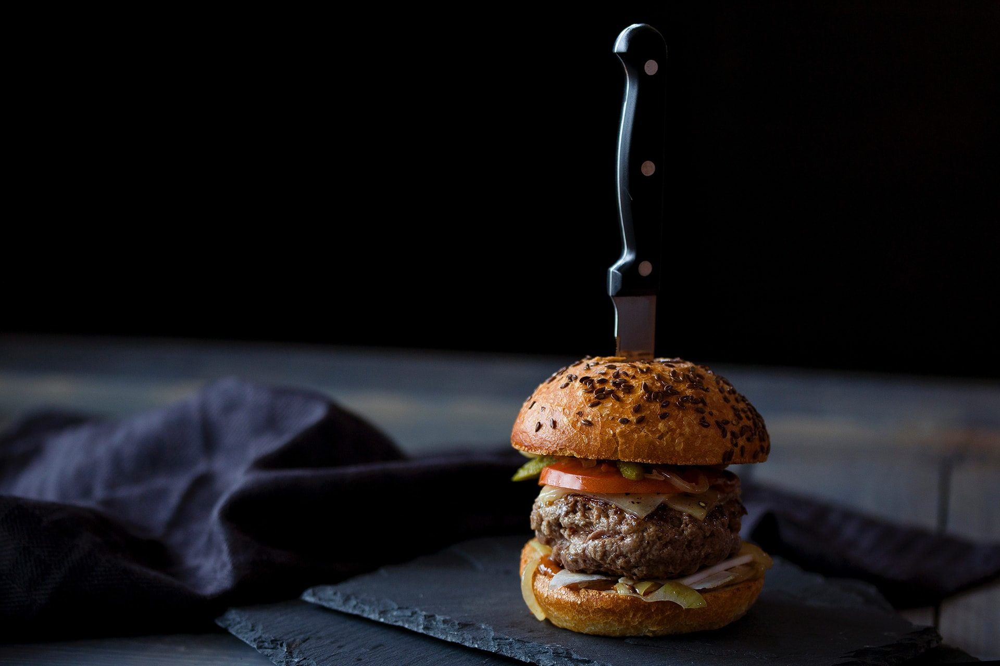
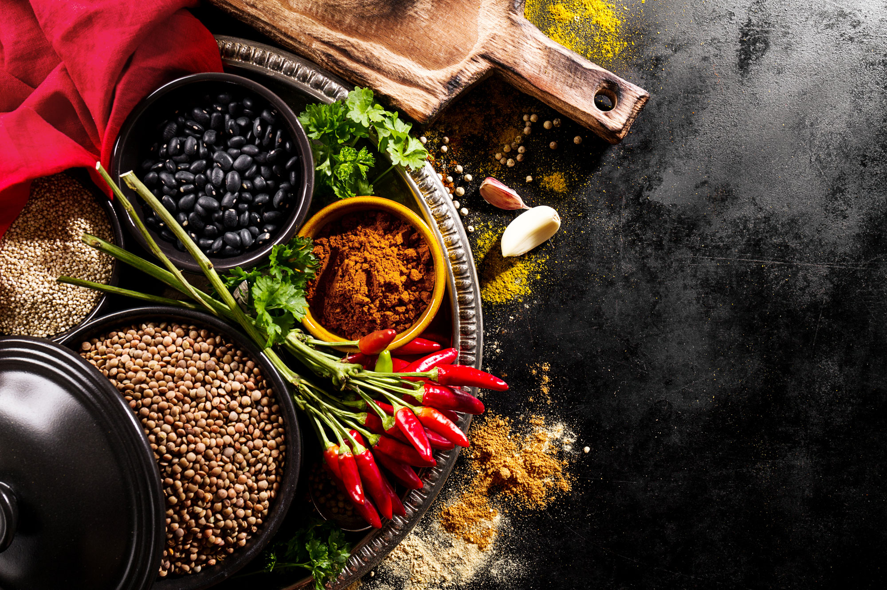
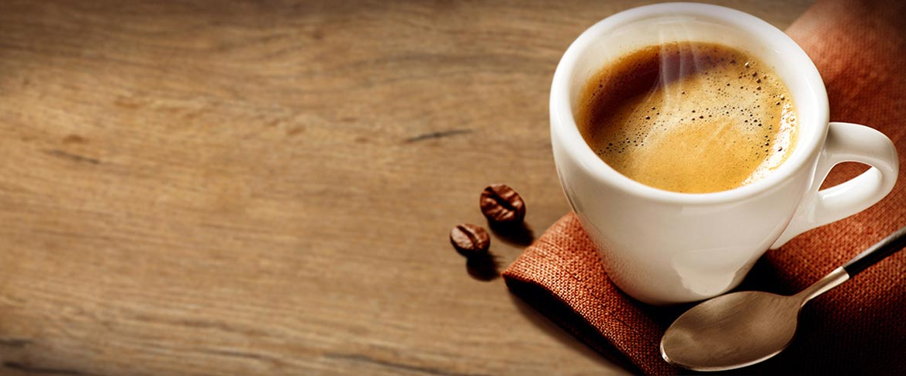
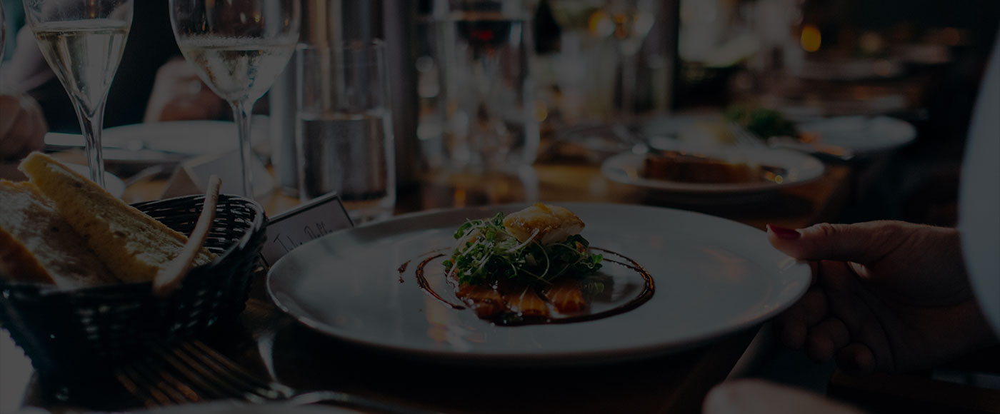

Le prospect choisit un style, puis on remplace contenus, photos, couleurs, liens de reservation, livraison et SEO local.
Des styles prets a montrer, rebrands comme si c'etait deja chez nous.
Chaque demo ci-dessous reprend une base visuelle differente, neutralisee sous la marque Ma Vitrine Online. Le but est simple : faire choisir une direction au prospect sans donner l'impression de sortir un template brut recopie d'internet. On vend une intention, une ambiance et une methode de personnalisation.
Chaque version a un ton distinct: premium, rapide, editorial, lounge, coffee shop, brasserie ou landing plus corporate.
Un bandeau commun “Ma Vitrine Online” est injecte dans chaque template et les liens locaux restent dans la demo.
Catalogue des 11 modeles
Les noms ci-dessous sont neutralises pour le showroom. Chaque carte affiche maintenant un apercu direct pour comprendre l'ambiance avant d'ouvrir la demo.

Apercu du style
Atmosphere
01
Model 1
Une direction editoriale tres imagee pour cafe, brunch, cave a manger ou lieu qui veut installer une ambiance calme et premium.
 Apercu du style
Apercu du style
Pop Express
02
Model 2
Un template tres commercial, ideal pour restauration rapide, burger, tacos, pizza ou concept qui doit aller droit au clic.

Apercu du style
Editorial Food
03
Model 3
Une base magazine pour raconter une histoire de marque, publier des actualites et installer un univers plus riche qu'une simple carte.
 Apercu du style
Apercu du style
Street Kitchen
04
Model 4
Une direction moderne et dynamique pour restaurant urbain, fast casual, click and collect ou concept simple a lire sur mobile.

Apercu du style
Signature
05
Model 5
Un rendu plus haut de gamme avec hero plein ecran, bonne presence visuelle et structure ideale pour un lieu ambitieux.
 Apercu du style
Apercu du style
Maison
06
Model 6
Un site tres lisible pour brasserie, cuisine maison ou table familiale qui veut une image simple, rassurante et chaleureuse.

Apercu du style
Coffee & Brunch
07
Model 7
Une vitrine tres accessible pour coffee shop, brunch, salon de the ou petite adresse de quartier qui veut etre accueillante.
 Apercu du style
Apercu du style
Night & Chic
08
Model 8
Une ambiance sombre et selective pour bar a cocktails, speakeasy, restaurant du soir ou lieu qui vend la privatisation.
 Apercu du style
Apercu du style
Premium Landing
09
Model 9
Une landing page tres complete pour groupe, franchise, grosse brasserie ou projet qui veut montrer un cadre tres professionnel.

Apercu du style
Brasserie Classique
10
Model 10
Une structure simple, rassurante et facile a projeter pour restaurant traditionnel, pizzeria, grill ou offre tres classique.
 Apercu du style
Apercu du style
Moderne Lumineux
11
Model 11
Une base contemporaine et lumineuse pour restaurant familial, traiteur, cantine premium ou concept axe sur la clarté.
Mode d'emploi : on montre le catalogue, le prospect choisit une ambiance, puis on lui vend la personnalisation complete du site avec son vrai contenu. Les demos restent volontairement neutres et signees Ma Vitrine Online.